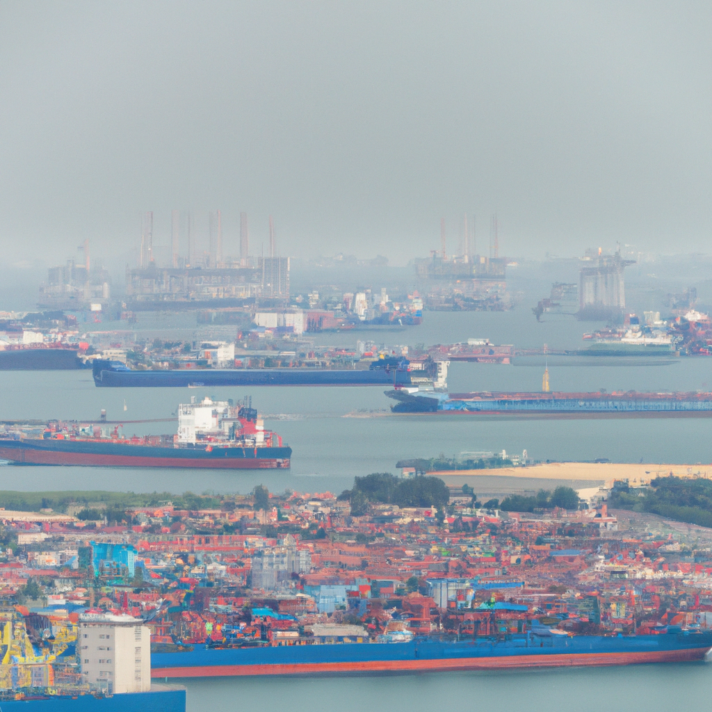

Shipping congestion at the ports
As a transportation company, we are all too familiar with shipping congestion at the ports. With the ever-increasing demands for goods and services, it is becoming increasingly difficult to keep up with the demands of the global marketplace. With the help of technology, however, we have been able to develop systems that can help us better manage shipping congestion.
One of the most important aspects of managing shipping congestion is the use of crating. By using crating, we can better manage the amount of goods being shipped and ensure that the goods are properly distributed amongst the ports. This helps to ensure that goods arrive at their destinations quickly and efficiently. Additionally, by using crating, we can ensure that goods are properly packaged and labeled, helping to prevent any delays due to mislabeled or damaged goods.
We have also implemented technology that helps us better track and manage goods in transit. By using real-time tracking, we can better monitor the location of goods and identify any potential issues that could cause delays. This helps us to better manage any potential delays, helping to ensure that goods are delivered on time and without any issues.
Finally, we have implemented systems that help us create accurate shipping estimates. With the help of these systems, we can better predict how long it will take goods to reach their destinations, helping to ensure that we can better manage the shipping process and ensure that goods are delivered on time.
As a transportation company, shipping congestion is something we are all too familiar with. By making use of technology, however, we have been able to better manage shipping congestion and ensure that goods are delivered on time and without any issues.